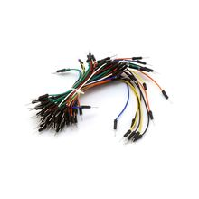

Провода
Провода-перемычки Папа-Папа, разноцветные (40 шт.)
Это набор разноцветных проводов-перемычек «папа-папа» на 40 штук для соединения модулей, макетных плат и плат с штыревыми разъёмами. Такой комплект обычно используют для быстрого прототипирования без пайки.

Документация
Премиальные провода-перемычки Male/Male, 40×3" — Adafruit40 colored male-male jumper wires — Arduino Online Shop
Характеристики
Тип
провода-перемычки
Исполнение
папа-папа (male-male)
Количество
40 шт.
Шаг разъёмов
2.54 мм
Материал проводника
многожильный провод
Сечение
28 AWG
Длина одного провода
75 мм
Цвета
разноцветные (rainbow)
Подробнее
Набор предназначен для временного или полустационарного соединения электронных плат, датчиков и модулей с разъёмами формата 2.54 мм. Конструкция «папа-папа» означает, что на обоих концах каждого провода стоят штыревые (male) контакты. Разноцветная маркировка облегчает разводку сигналов и питания в макетных схемах. Для таких комплектов типична ленточная укладка из отдельных проводов, которые можно разделять по одному.
hw-2026-021